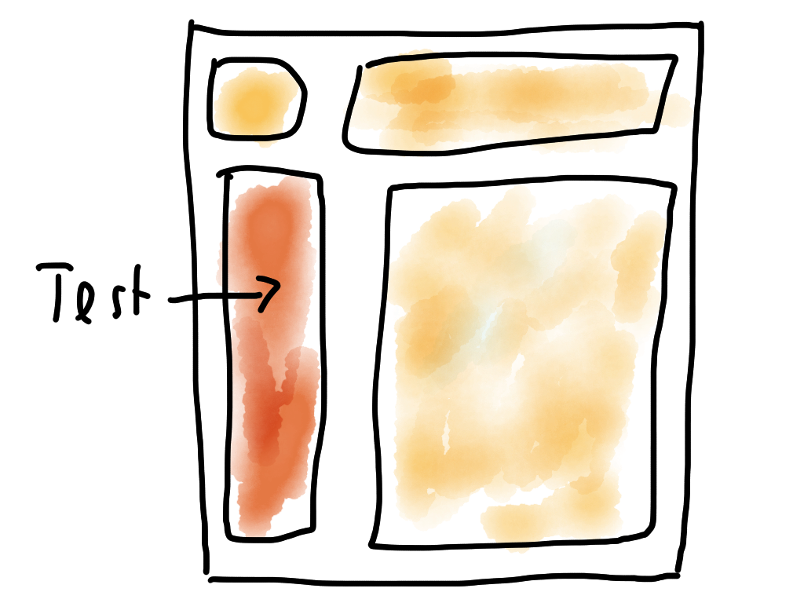
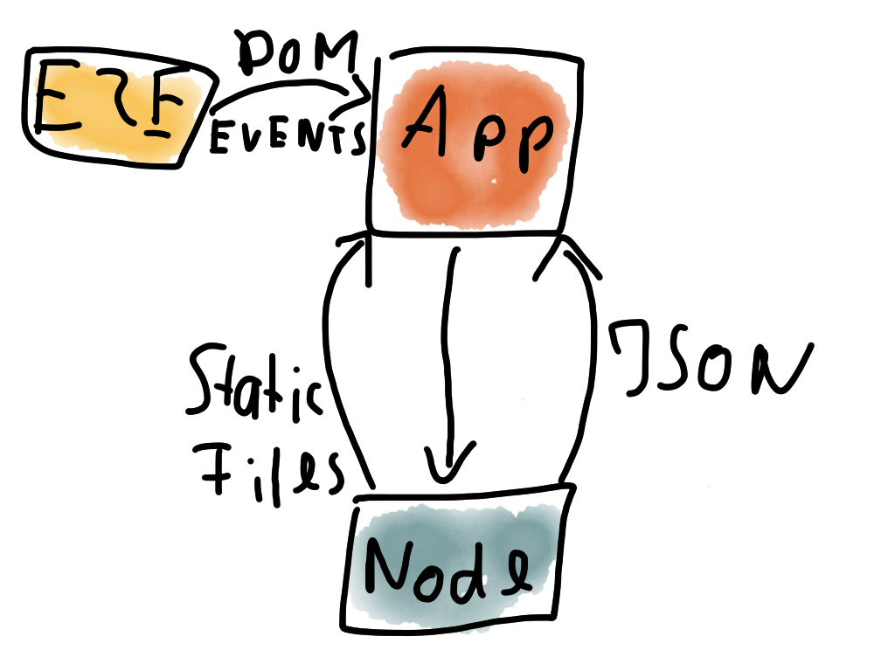

Testing with AngularJS
By Andi Marek / @andimarek
errare humanum est
Overview
- Test Pyramid
- Tools
- Unit Testing
- Directive Testing
- E2E Testing
General Test Pyramid
Based on Return on investment (ROI)
From Top to Bottom: Less integrated

AngularJS Test Pyramid

Tools
- Build: Grunt
- Test Runner: Karma
- Test Framework: Jasmine
- Headless Browser: PhantomJS
Unit Tests
- White Box Testing of Services, Controller and Filter.
- Testing the smallest possible scope (lines of code).
- Testing in Isolation: Dependencies are mocked.
Purpose of Unit Tests
- What to implement/Focus
- Is it still working?
- Documentation
Unit Test Setup
- Angular Mocks Library
- Jasmine
- Karma
Example Unit Test
describe('Testing myService', function () {
var myService;
var aDependencyMock;
beforeEach(function () {
aDependencyMock = {
someFunction: function () {
}
};
module('myModule.myService');
module(function ($provide) {
$provide.value('aDependency', aDependencyMock);
});
inject(function (_myService_) {
myService = _myService_;
});
});
it('service should be defined', function () {
expect(myService).toBeDefined();
});
});
Directive Tests
- A part of the app tested through the DOM
- A part of the app = Directive
- Integration Test
- No Backend Calls or external dependencies
One Directive is tested
Directive Test Setup
- Angular Mocks Library
- Jasmine
- Karma
Example Directive Test
describe('Testing myDirective', function () {
var element;
var $scope;
beforeEach(function () {
module('myModule.myDirectice');
inject(function ($compile, $rootScope) {
$scope = $rootScope.$new();
element = angular.element('<myDirective/>');
$compile(element)($scope);
$scope.$digest();
});
});
it('now test element', function () {
});
});
Testing against the DOM
it('should call methodX on click', function () {
spyOn($scope, 'methodX');
element.find('.button').click();
expect($scope.methodX).toBeCalled();
});
E2E (Scenario) Tests
- Black box application Tests
- Integrated with Angular: Knows when the app is ready
- Jasmine like syntax
- Protractor: Successor based on Webdriver
E2E Test Setup
- Angular Scenario Library
- Karma
Example Test Architecture for E2E Tests
E2E with Node.JS Backend
E2E Test Example
describe('E2E Test', function () {
beforeEach(function () {
browser().navigateTo('/url/to/test/index.html');
});
it("should show a dialog", function () {
element('.show-dialog').click();
expect(element(".dialog").count()).toBe(1);
});
});
Conclusion/Experience
- Fast feedback cycle with Karma/Grunt: 2 min release
- 700 Unit vs 100 Directive vs 25 E2E
- Prefer the bottom of the pyramid
- Every pyramid looks different